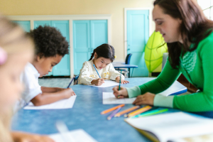
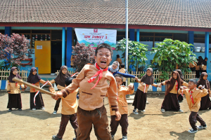
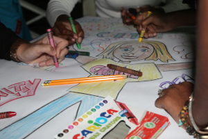
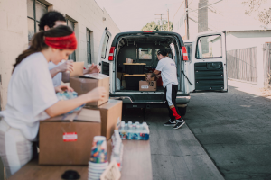
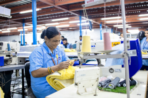
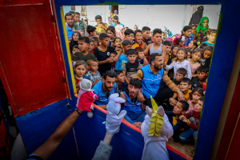

O projeto "Educação para Todos" tem como objetivo oferecer reforço
escolar gratuito para crianças de 6 a 12 anos, garantindo apoio no
aprendizado e fortalecendo o desenvolvimento educacional de forma
acolhedora e humanizada. Além das atividades em sala de aula, as
crianças participam de momentos de arte e criatividade, como
pintura e desenho, e também de dinâmicas recreativas ao ar livre,
que estimulam a convivência, o trabalho em equipe e o
desenvolvimento social.



Projeto Mãos que Ajudam
O Projeto "Mãos que Ajudam" tem como propósito capacitar
voluntários por meio de cursos rápidos e práticos, preparando-os
para atuar diretamente nas necessidades da comunidade local. As
atividades incluem oficinas educativas e lúdicas, como
apresentações com fantoches para crianças, ações de geração de
renda — como costura e artesanato — e preparação de doações e
itens essenciais para famílias em situação de vulnerabilidade. O
projeto busca unir solidariedade e aprendizado, oferecendo aos
voluntários a oportunidade de desenvolver habilidades enquanto
contribuem com gestos que transformam vidas e fortalecem o vínculo
comunitário.



Como Doar
Você pode apoiar nossos projetos realizando doações pelo botão
abaixo: